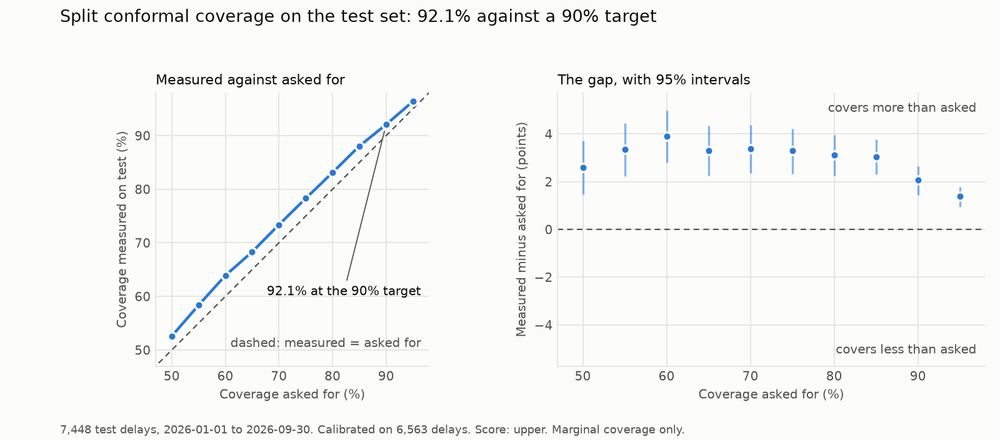
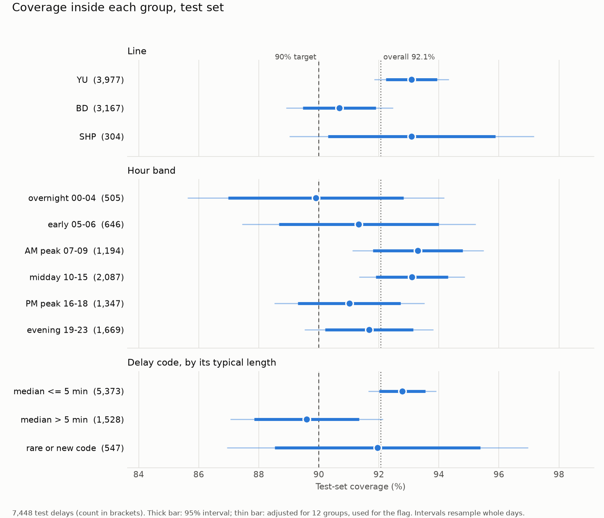

How long until a TTC subway delay clears?
A 90% upper bound on how long a logged Toronto subway delay lasts, with the coverage guarantee checked on delays the model never saw. On 7,448 delays from January to September 2026, measured once, the bounds covered 92.1% against a 90% target.
Try it
Loading the model's answers…
Retrospective, not a rider tool: the delay code is assigned by TTC staff after a delay starts. The 90% is an average over all delays, not a promise for any single one.
Does the 90% hold?
Overall, yes, with room to spare. The bound covered 92.1% of 2026 test delays (95% CI 91.4% to 92.7%). That is above the 89.0% to 91.0% that exchangeable data would give: 2026 delays ran shorter than 2025's, so the bounds were wider than they needed to be.

Does it hold inside groups?
The guarantee is marginal, so I checked 12 groups fixed before looking. A group counts as undercovering only if its Bonferroni-adjusted interval lies wholly below 90%. None does. The audit can rule out large shortfalls, not one of a point or two.
| Group | Delays | Coverage | Adjusted interval | Verdict |
|---|

How it works
- A gradient-boosting model predicts each delay's 90th percentile from line, hour band, day of week, station and delay code, trained on 2023 to early-2025 delays.
- Split conformal prediction measures how far that percentile misses on 6,563 held-out 2025 delays and raises every bound by the amount that makes 90% hold: 0.0835 minutes.
- The test set was measured once, and the groups and the rule for the audit were committed before it ran.
- This page answers from a table of every answer the model can give, so it needs no server. It matches the project's JSON endpoint to the hundredth of a minute.